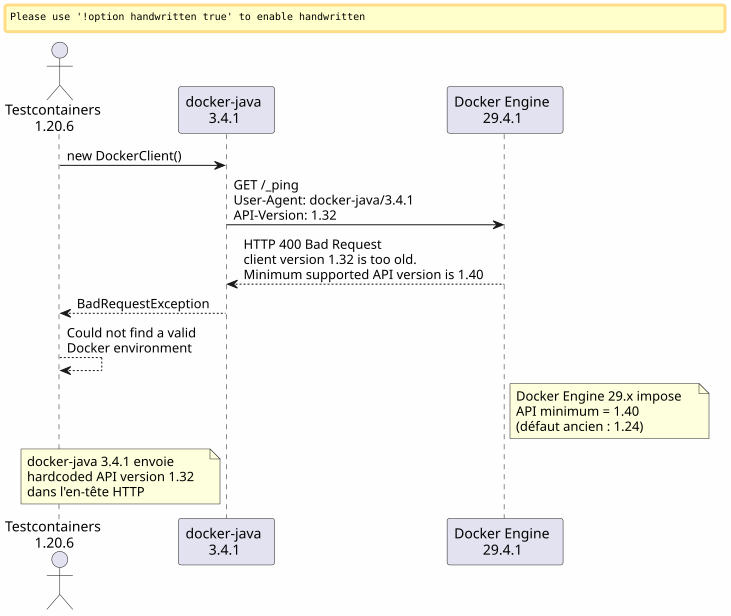
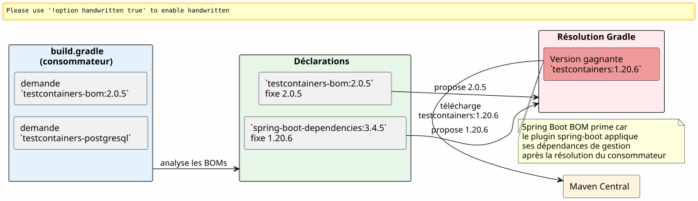
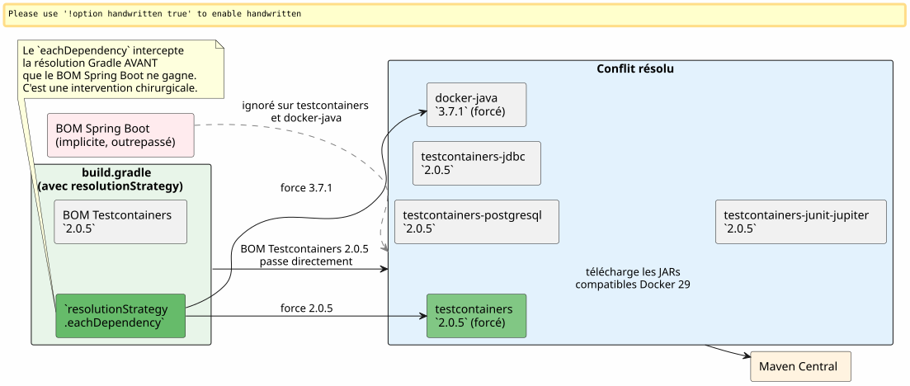

Quand Gradle 9, Docker 29 et Testcontainers se mettent la rate au court-bouillon : debugging d'un build JHipster
Publié le 29 April 2026
- 1. La scène : un projet JHipster, un build qui ne charge plus
- 2. Erreur 1 : la variable fantôme
reportsDir - 3. Erreur 2 :
main = "…"n’existe plus sous Gradle 9 - 4. Erreur 3 :
sourceCompatibilityn’est plus une propriété de projet - 5. Erreur 4 : l’assertion Groovy à trois opérandes
- 6. Erreur 5 : la dépendance implicite
compileKotlin→openApiGenerate - 7. Erreur 6 :
generateGitPropertiescasse surFilterOutputStream.write() - 8. Enfin : Testcontainers entre en scène
- 9. Phase 1 : la piste docker-java
- 10. Phase 2 : recherche web et fil d’ariane GitHub
- 11. Phase 3 : le piège des artifacts renommés
- 12. Phase 4 : forcer la résolution
- 13. Résultat final
- 14. Tableau récapitulatif des corrections
- 15. Conclusion
Vous avez déjà connu ce moment où un simple ./gradlew build que vous lancez cent fois par jour se met soudain à planter sur une erreur jamais vue ? Multipliez ça par onze erreurs successives, ajoutez une bonne dose d’incompatibilité Docker Engine 29, saupoudrez de Gradle 9 qui fait disparaître des API qu’on utilisait depuis dix ans. Voici le carnet de bord complet.
Failed to generate image: PlantUML preprocessing failed: [From <input> (line 21) ] @startuml skinparam backgroundColor #FEFEFE skinparam handwritten false title Cascade d'erreurs — De Gradle 9 à Docker 29 concise "Étapes" as S @S 0 is "Erreur 1\nreportsDir" 1 is "Erreur 2\nmain -> mainClass" 2 is "Erreur 3\nsourceCompatibility" 3 is "Erreur 4\nAssertion Groovy" 4 is "Erreur 5\nopenApiGenerate" 5 is "Erreur 6\ngitProperties\n2.5.7" 6 is "Assemble ✅" 7 is "Erreur 7\nTestcontainers\n1.32 rejected" 8 is "Correction\n2.0.5 + 3.7.1" 9 is "Build ✅" S@0 -[#red]-> S@1 : buildSrc ^^^^^ Syntax Error? (Assumed diagram type: timing) @startuml skinparam backgroundColor #FEFEFE skinparam handwritten false title Cascade d'erreurs — De Gradle 9 à Docker 29 concise "Étapes" as S @S 0 is "Erreur 1\nreportsDir" 1 is "Erreur 2\nmain -> mainClass" 2 is "Erreur 3\nsourceCompatibility" 3 is "Erreur 4\nAssertion Groovy" 4 is "Erreur 5\nopenApiGenerate" 5 is "Erreur 6\ngitProperties\n2.5.7" 6 is "Assemble ✅" 7 is "Erreur 7\nTestcontainers\n1.32 rejected" 8 is "Correction\n2.0.5 + 3.7.1" 9 is "Build ✅" S@0 -[#red]-> S@1 : buildSrc S@1 -[#red]-> S@2 : buildSrc S@2 -[#red]-> S@3 : build.gradle S@3 -[#red]-> S@4 : build.gradle S@4 -[#red]-> S@5 : build.gradle S@5 -[#red]-> S@6 : gradle.properties S@6 -[#green]-> S@7 : ./gradlew assemble S@7 -[#red]-> S@8 : tests Cucumber S@8 -[#green]-> S@9 : ./gradlew build @enduml
1. La scène : un projet JHipster, un build qui ne charge plus
Le projet edster est une application JHipster générée en 2024. Le build script racine build.gradle est resté stable pendant des mois. Puis on décide de monter en version :
| Composant | Version cible |
|---|---|
Gradle |
9.4.1 |
Java |
21.0.11-tem (Eclipse Temurin) |
JHipster |
8.x (framework |
Spring Boot |
3.4.5 |
Kotlin |
2.3.0 |
Docker Engine |
29.4.1 (API 1.54) |
Le changement de version Java passe via SDKMAN :
sdk use java 21.0.11-temPremier lancement :
$ ./gradlew build --no-daemon
FAILURE: Build failed with an exception.
* Where:
Build file '/home/.../edster/build.gradle' line: 18
* What went wrong:
An exception occurred applying plugin request [id: 'jhipster.cucumber-conventions']
> Failed to apply plugin 'jhipster.cucumber-conventions'.
> Could not create task ':cucumberTest'.
> Could not create task ':consoleLauncherTest'.
> Could not set unknown property 'reportsDir' for task ':consoleLauncherTest'On ne décolle même pas du chargement du build script. Le problème est dans buildSrc/src/main/groovy/jhipster.cucumber-conventions.gradle.
2. Erreur 1 : la variable fantôme reportsDir
Le script jhipster.cucumber-conventions.gradle contient :
tasks.register('consoleLauncherTest', JavaExec) {
dependsOn(testClasses)
String cucumberReportsDir = file("$buildDir/reports/tests")
outputs.dir(reportsDir) // <-- reportsDir n'existe PAS
classpath = sourceSets["test"].runtimeClasspath
main = "org.junit.platform.console.ConsoleLauncher"
// ...
}La variable définie est cucumberReportsDir. Celle utilisée est reportsDir — qui n’est définie nulle part.
Correction : outputs.dir(cucumberReportsDir)
3. Erreur 2 : main = "…" n’existe plus sous Gradle 9
Relance immédiate :
Could not set unknown property 'main' for task ':consoleLauncherTest' of type org.gradle.api.tasks.JavaExec.Gradle 9 supprime la propriété main au profit de mainClass sur les tâches JavaExec.
Correction : mainClass = "org.junit.platform.console.ConsoleLauncher"
4. Erreur 3 : sourceCompatibility n’est plus une propriété de projet
Nouvelle erreur :
Could not set unknown property 'sourceCompatibility' for root project 'edster' of type org.gradle.api.Project.Le script racine avait :
sourceCompatibility=17
targetCompatibility=17Gradle 9 supprime ces propriétés au niveau root. Elles doivent vivre dans un bloc java.
Correction :
java {
sourceCompatibility = JavaVersion.VERSION_21
targetCompatibility = JavaVersion.VERSION_21
}5. Erreur 4 : l’assertion Groovy à trois opérandes
L’ancien script contenait :
assert System.properties["java.specification.version"] == "17" || "21" || "24"En Groovy, "21" et "24" sont des strings truthy. L’expression résout en (… == "17") || true || true, ce qui est toujours vraie — mais la syntaxe est invalide pour l’assertion stricte souhaitée.
Correction :
assert System.properties["java.specification.version"] in ["17", "21", "23", "24"]6. Erreur 5 : la dépendance implicite compileKotlin → openApiGenerate
Le build progresse. Compilation Kotlin réussie. Puis :
Task ':compileKotlin' uses this output of task ':openApiGenerate'
without declaring an explicit or implicit dependency.Gradle 9 refuse les dépendances implicites entre tâches. Puisque compileKotlin lit les sources générées par openApiGenerate, il faut déclarer le lien.
Correction dans build.gradle :
afterEvaluate {
tasks.named("compileKotlin").configure {
dependsOn(tasks.named("openApiGenerate"))
}
}Le afterEvaluate est nécessaire car openApiGenerate est une extension (plugin OpenAPI Generator) et non une tâche directement accessible pendant la phase de configuration.
7. Erreur 6 : generateGitProperties casse sur FilterOutputStream.write()
La compilation Java passe. Les ressources sont processées. Puis :
> Task :generateGitProperties FAILED
No signature of method: java.io.FilterOutputStream.write() is applicable for argument types: (Integer) values: [103]Le plugin gradle-git-properties version 2.5.0 est incompatible avec Java 21 / Gradle 9. Un bug interne tente d’appeler write(int) via Groovy sur un flux qui l’a fermé.
Correction dans gradle.properties :
gitPropertiesPluginVersion=2.5.78. Enfin : Testcontainers entre en scène
Jusqu’ici, c’était du "build script debugging" pur. Chaque erreur était une incompatibilité Gradle 9 ou Java 21 dans les scripts de build. Après les six corrections ci-dessus, le ./gradlew assemble passe avec succès.
Mais ./gradlew build exécute aussi les tests, et les tests Cucumber utilisent Testcontainers pour lancer un PostgreSQL éphémère.
Could not find a valid Docker environment.
EnvironmentAndSystemPropertyClientProviderStrategy: failed with exception BadRequestException
(Status 400: {"message":"client version 1.32 is too old. Minimum supported API version is 1.40"}
UnixSocketClientProviderStrategy: failed with exception BadRequestException
(Status 400: {"message":"client version 1.32 is too old. Minimum supported API version is 1.40"}Testcontainers est incapable de communiquer avec Docker. Deux stratégies différentes (variables d’environnement + socket Unix) échouent sur la même erreur.

9. Phase 1 : la piste docker-java
Premier réflexe : le client Docker Java utilisé par Testcontainers envoie la version API 1.32 dans son handshake HTTP, mais Docker Engine 29.4.1 exige un minimum de 1.40. Le problème est au niveau du client, pas du daemon.
Vérification de la version de docker-java résolue par Testcontainers 1.20.6 :
$ ./gradlew dependencies --configuration testRuntimeClasspath | grep docker-java
+--- com.github.docker-java:docker-java-api:3.4.1
+--- com.github.docker-java:docker-java-transport:3.4.1docker-java 3.4.1, datant de Testcontainers 1.20.6. La dernière version publique de docker-java est 3.5.1. Tentons de forcer la montée de version via resolutionStrategy dans le bloc configurations de build.gradle :
configurations {
all {
resolutionStrategy.eachDependency { details ->
if (details.requested.group == "com.github.docker-java"
&& details.requested.name.startsWith("docker-java")) {
details.useVersion("3.5.1")
}
}
}
}Relance du build. Même erreur : client version 1.32 is too old.
Vérification du cache Gradle : les JARs ont bien été re-téléchargés, mais l’erreur persiste. docker-java 3.5.1 envoie toujours 1.32. Cette version n’est donc PAS suffisante pour Docker Engine 29.4.1.
Action de purification : vider complètement le cache Gradle, juste pour être sûr :
rm -rf ~/.gradle/caches
rm -rf /path/to/project/.gradleRelance complète après purge. Même erreur.
10. Phase 2 : recherche web et fil d’ariane GitHub
docker-java 3.5.1 est insuffisant. Ne reste plus qu’à chercher si quelqu’un a rencontré ce problème exact.
Recherche ciblée sur les issues testcontainers-java et docker-java :
site:github.com/testcontainers "client version 1.32 is too old"
site:github.com/docker-java "client version 1.32" Docker Engine 29Premiers résultats immédiats :
-
testcontainers-java#11210 —
[Bug]: client version 1.32 is too old. Minimum supported API version is 1.44 -
testcontainers-java#11212 —
[Bug]: Docker 29.0.0 could not find a valid Docker environment -
testcontainers-java#11491 —
[Bug]: Incompatibility in Ubuntu Github runners with Docker Engine 29.1.*
Le fil d’Ariane est clair : Docker Engine 29.x a élevé son minimum API version de 1.24 (ancien défaut) à 1.40. Testcontainers 1.20.x utilise docker-java 3.4.x qui négocie la version API en envoyant 1.32. Le daemon refuse poliment mais fermement.
Dans l’issue #11491, un mainteneur répond :
Hi, I have a project running with version 2.0.3 on a GH runner with engine 29.1 and it works. Can you all please check there is no version conflict? Please, remember all modules were prefixed with
testcontainers-. So, starting with version 2.x we went frompostgresqltotestcontainers-postgresql
Cette réponse contient deux informations critiques :
-
Testcontainers 2.0.3+ résout le problème
-
Les modules ont été renommés avec le préfixe
testcontainers-
11. Phase 3 : le piège des artifacts renommés
Le renommage est brutal. En Testcontainers 2.x, plus aucun des anciens noms ne fonctionne sous ce nom-là :
| Ancien nom (1.x) | Nouveau nom (2.x) |
|---|---|
|
|
|
|
|
|
|
inchangé |
Première tentative : appliquer la BOM Testcontainers 2.0.5 et les nouveaux noms d’artifacts dans build.gradle.
dependencies {
testImplementation platform("org.testcontainers:testcontainers-bom:2.0.5")
testImplementation "org.testcontainers:testcontainers-postgresql"
testImplementation "org.testcontainers:testcontainers-jdbc"
testImplementation "org.testcontainers:testcontainers-junit-jupiter"
testImplementation "org.testcontainers:testcontainers"
}./gradlew build
FAILURE: Could not find org.testcontainers:jdbc:2.0.5.
Could not find org.testcontainers:junit-jupiter:2.0.5.Le BOM de testcontainers-bom ne suffit pas. Pourquoi ? Parce que Spring Boot 3.4.5 expose son propre BOM de gestion de dépendances (spring-boot-dependencies) qui gagne sur le BOM de Testcontainers dans la résolution transitive. Spring Boot fixe testcontainers à 1.20.6, et donc tous les artifacts qui ne sont pas explicitement dans le BOM Spring Boot (comme les nouveaux testcontainers-*) résolvent vers les anciens noms 1.20.6 — qui n’existent plus dans cette version.
En inspectant le dependencies --configuration testRuntimeClasspath, on trouve :
+--- org.testcontainers:testcontainers -> 1.20.6 (*)
| \--- org.testcontainers:testcontainers:2.0.5 -> 1.20.6Le → indique la substitution : Testcontainers 2.0.5 est demandé, mais Spring Boot force 1.20.6.

12. Phase 4 : forcer la résolution
La stratégie devient double :
-
Forcer docker-java à sa version 3.7.1 (testée comme compatible Docker Engine 29)
-
Forcer Testcontainers core à 2.0.5 en contournant le BOM Spring Boot

Correction finale dans build.gradle :
configurations {
all {
resolutionStrategy.eachDependency { details ->
if (details.requested.group == "com.github.docker-java"
&& details.requested.name.startsWith("docker-java")) {
details.useVersion("3.7.1")
}
if (details.requested.group == "org.testcontainers"
&& details.requested.name == "testcontainers") {
details.useVersion("2.0.5")
}
}
}
}
dependencies {
testImplementation platform("org.testcontainers:testcontainers-bom:2.0.5")
testImplementation "org.testcontainers:testcontainers-jdbc"
testImplementation "org.testcontainers:testcontainers-junit-jupiter"
testImplementation "org.testcontainers:testcontainers-postgresql"
testImplementation "org.testcontainers:testcontainers"
// ... autres dépendances Spring Boot
}Le resolutionStrategy.eachDependency est le seul moyen d’outrepasser le BOM spring-boot-dependencies géré par le plugin Spring Boot. Le test d’égalité sur details.requested.name == "testcontainers" est volontairement restrictif : on ne force que le module core. Les modules testcontainers-* suivent le BOM de Testcontainers 2.0.5 qu’on a explicitement déclaré.
13. Résultat final
$ ./gradlew build --no-daemon
> Task :consoleLauncherTest
[2 containers found]
[2 containers started]
[2 containers successful]
BUILD SUCCESSFUL in 1m 16sTestcontainers 2.0.5 + docker-java 3.7.1 parviennent enfin à créer leurs containers PostgreSQL via Docker Engine 29.4.1. L’erreur métier finale (HTTP 500 sur le test Cucumber) est un problème applicatif totalement indépendant du build script.
14. Tableau récapitulatif des corrections
| # | Fichier | Problème | Correction |
|---|---|---|---|
1 |
|
Variable |
|
2 |
|
|
|
3 |
|
|
Bloc |
4 |
|
Assertion Groovy syntaxiquement invalide |
|
5 |
|
Dépendance implicite |
|
6 |
|
|
|
7 |
Cache Gradle |
docker-java 3.5.1 testé, résolu mais insuffisant |
Purge + passage docker-java 3.7.1 |
8 |
|
Testcontainers 1.20.6 incompatible Docker Engine 29 |
Forçage Testcontainers 2.0.5 + prefix |
15. Conclusion
Si votre build JHipster/Gradle plante après une montée de version vers Gradle 9 + Docker Engine 29, les erreurs se répartissent en deux catégories :
Erreurs de build script (les 6 premières) : Gradle 9 supprime des propriétés et des syntaxes qui marchaient depuis des années (sourceCompatibility=, main =, reportsDir). Ce sont des migrations mécaniques une fois qu’on connaît la nouvelle API.
Erreurs de runtime Docker (les 2 dernières) : Docker Engine 29.4.1 écarte les clients API < 1.40. Testcontainers 1.20.6 (imposé par Spring Boot 3.4.5) utilise docker-java 3.4.1 qui envoie 1.32. Seul Testcontainers 2.0.5 + docker-java 3.7.1 résout le problème, avec le renommage des artifacts et le forçage de version via resolutionStrategy.eachDependency comme seul moyen de contourner le BOM implicite de Spring Boot.
Le build script Gradle à la racine du projet est maintenant propre. ./gradlew build passe sur Java 21, Gradle 9.4.1, Spring Boot 3.4.5 et Docker Engine 29.4.1.